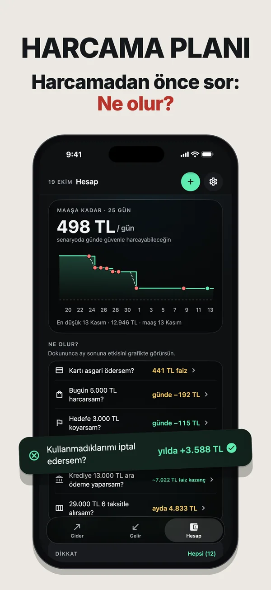
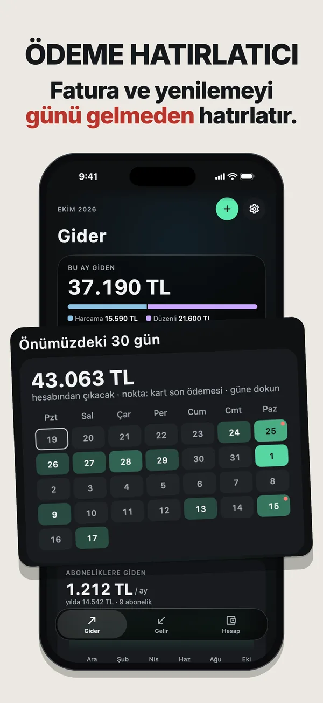
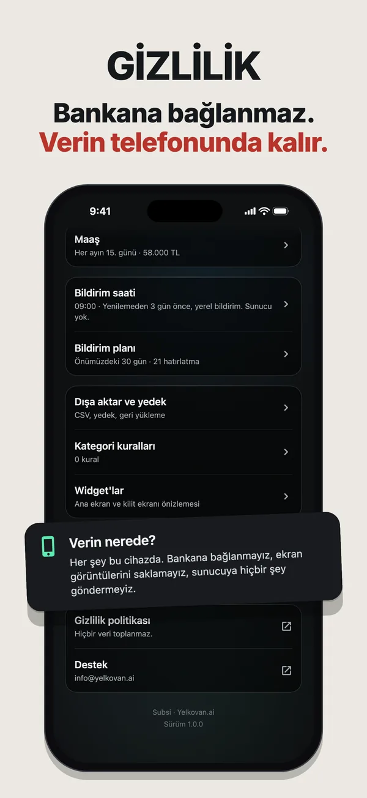

Abonelik takip uygulaması Subsi
Subsi aboneliklerini, faturalarını ve kart ödemelerini tek yerde toplar. Zamları gösterir, kullanmadığın abonelikleri sorar, maaşa kadar günde ne kadar harcayabileceğini hesaplar. Bankana bağlanmaz, hesap açtırmaz; her şey telefonunda kalır.

Zam ve yenileme hatırlatıcı
Fiyatı artan aboneliği işaretler, yenilemeden önce "Son 30 günde kullandın mı?" diye sorar. Senin yerine iptal etmez; neyin boşa gittiğini gösterir, kararı sen verirsin.
Maaşa kadar günlük bütçe
Maaş gününe kadar günde güvenle ne harcayabileceğini gösterir. Harcamadan önce sor: kartı asgari ödersem, taksitle alırsam ne olur?
Bankana bağlanmaz
Hesap ve giriş yok, uygulama internete çıkmaz, hiçbir veri toplanmaz. Her şey telefonunda kalır.



Abonelik takibi: hepsi tek listede
Abonelik listen toplamıyla birlikte tek ekranda durur: hangisi ne zaman yenileniyor, ne kadar tutuyor, hangi kartla ödeniyor. Dizi ve müzik platformları, bulut depolama, spor salonu, haber üyelikleri; kategorisi ne olursa olsun. Faturalar, kart son ödeme günleri ve kredi taksitleri de aynı 30 günlük takvimde görünür.
Eklemenin üç yolu var:
- Elle: sağ üstteki + ile abonelik, fatura, taksit ya da kart ekstresi.
- Ekran görüntüsünden ya da PDF'ten: abonelik listesinin ekran görüntüsünü, bir faturayı ya da kart ekstresinin PDF'ini seç; Subsi bulduklarını gösterir, doğru olanları sen seçersin. Okuma telefonda yapılır, dosya hiçbir yere gönderilmez.
- Paylaş menüsünden: Fotoğraflar, Dosyalar ya da e-postadan Paylaş › Subsi.
Zam ve yenileme hatırlatıcı
Subsi fiyatı artan aboneliği zamlı olarak işaretler ve yılda ne kadar fark ettiğini gösterir. Deneme süresiyle başlayanlar "deneme" etiketiyle görünür. Yenileme, fatura, kart son ödemesi ve kredi taksiti için günü gelmeden yerel bildirim gönderir; saatini sen seçersin.
Yenilemeden önce "Son 30 günde kullandın mı?" diye sorar. Yenileme sorusunda "İptal adımları" seçeneği de var; iptalin kendisini yine sen yaparsın.
Kullanmadığın abonelikler
Kullanmadığını söylediğin abonelik işaretlenir. "Ne olur?" bölümünde, kullanmadıklarını bırakırsan yıllık toplamının ne kadar değiştiğini kendi rakamlarınla görürsün. Subsi neyin boşa gittiğini gösterir; hiçbir aboneliği kendiliğinden iptal etmez.
Maaşa kadar günlük bütçe
Maaşını ve bakiyeni girince Hesap sekmesi maaş gününe kadar günde güvenle ne harcayabileceğini gösterir. Her harcama grafikteki basamağı ve günlük rakamı günceller. Gelir gider takibi, kategori bütçeleri (aşmadan önce uyarır), birikim ve hedefler aynı uygulamada.
Harcamadan önce sorabilirsin: kartı asgari ödersem, 5.000 TL harcarsam, taksitle alırsam? Etkisi ay sonuna kadar grafikte görünür. Hesabın nasıl yapıldığını maaştan günlük limit rehberinde anlattık.
Bankana bağlanmaz, verin telefonunda kalır
- Banka bağlantısı, hesap ve giriş yok.
- Uygulama internete çıkmaz ve sunucumuz yok; Android sürümünde internet izni bile yok.
- Reklam, analitik, çökme raporlama ve izleme yok; hiçbir veri toplanmaz.
- Başka para birimindeki abonelik ve birikimler için kuru sen girersin; uygulama internetten kur çekmez.
- Yedeği ve CSV dışa aktarımını sen paylaşırsın; istediğin an bütün verileri silebilirsin.
Ayrıntı: Subsi gizlilik eki.
Sık sorulanlar
Subsi aboneliklerimi iptal eder mi?
Hayır. Subsi senin yerine iptal etmez ve hesaplarına girmez. Aboneliklerini tek listede gösterir, yenilemeden önce "Kullandın mı?" diye sorar; iptal kararı ve işlemi sende, Apple'da, Google'da ya da hizmetin kendisindedir.
Bankama bağlanıyor mu?
Hayır. Hesap ve giriş yok. Harcamalarını elle, ekran görüntüsünden ya da PDF'ten eklersin; okuma telefonda yapılır, dosya hiçbir yere gönderilmez.
iPhone ve Android'de çalışır mı?
Evet. iPhone ve iPad'de App Store'dan, Android telefon ve tabletlerde Google Play'den indirilir. Yedek dosyası iPhone ile Android arasında da çalışır.
Verilerim nerede, telefon değiştirirsem ne olur?
Verilerin yalnız telefonunda durur; sunucumuz yok. Telefon değiştirirken Ayarlar'dan yedek alıp yeni telefonda geri yüklersin. Yedeği ve CSV dışa aktarımını sen paylaşırsın.
Subsi ücretli mi, içinde abonelik var mı?
Subsi tek seferlik satın almadır. Abonelik, reklam ve uygulama içi satın alma yoktur. Güncel koşul mağaza sayfasında yazar.
Ekran görüntüsünden eklerken dosyam nereye gidiyor?
Hiçbir yere. Görsel ya da PDF'in içindeki yazı telefonunda okunur; Subsi bulduklarını gösterir, doğru olanları sen seçersin.
Rehberler
- iPhone'da aboneliklerini nasıl görürsün: Ayarlar'dan adım adım, listede çıkmayanlar ve iptal
- Maaştan günlük limit nasıl hesaplanır: formül, örnek hesap ve tablo formülü
Destek · Gizlilik eki · Subsi'yi Yelkovan (Yiğit Özdemir) geliştirir.